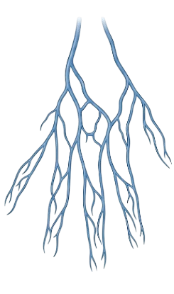

Guided Vein Identification & Vein Finder Training Simulator
Congratulations! You have successfully completed all 6 steps of the Vein Finder training module. You can now identify key veins and understand how the device aids clinical venipuncture.